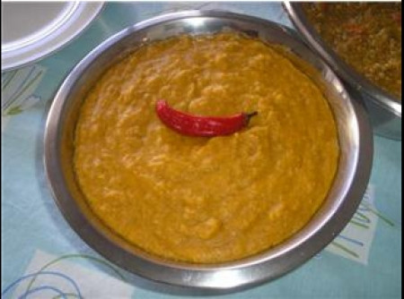

Vatapa Pernambucano

Ingredientes
- 1kg de bacalhau
- 1\2kg de file de peixe
- 1 raiz de gengibre
- 3 pimentoes
- 5 a 6 dentes de alho
- 4 cebolas
- Azeite de oliva
- 1\2kg de arroz
- 1 vidro (200ml) de azeite de dende
- 300g de amendoim
- 1L de leite
- 1L de leite de coco
- Pimenta do reino a gosto
- 1 sache de sazon sabor do nordeste
- 1 caixa de creme de leite
Modo de Preparo
- Cozinhar o arroz e, depois de cozido, triturar no liquidificador ou processador.
- Picar o alho, as cebolas e o pimentao (pode passar tudo no processador).
- Refogar os ingredientes picados no azeite de oliva.
- Adicionar o bacalhau e o file de peixe.
- Adicionar metade do leite de coco.
- Adicionar um pouco de leite.
- Adicionar o arroz triturado.
- Adicionar o resto do leite e do leite de coco.
- Adicionar o amendoim e os demais temperos.
- Cozinhar ate adquirir a consistencia pretendida.